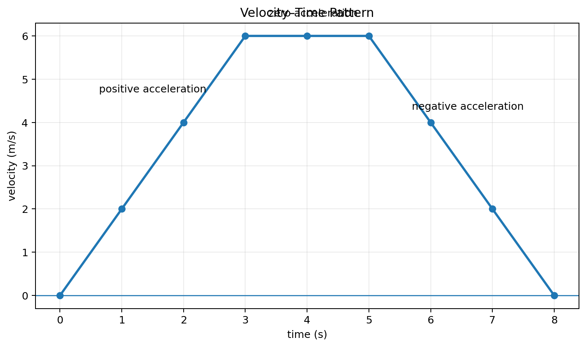
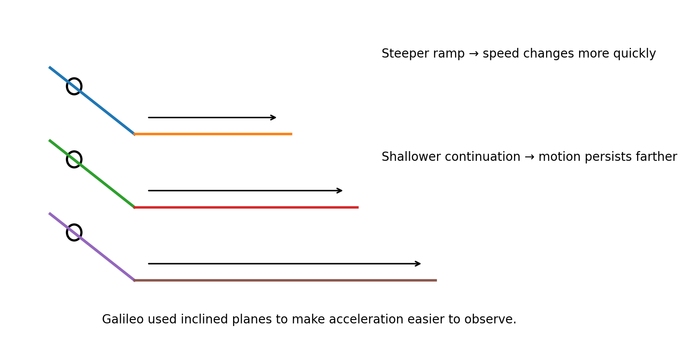

Acceleration
- I can calculate acceleration from change in velocity and time.
- I can explain that acceleration can involve speeding up, slowing down, or changing direction.
- I can identify positive, negative, or zero acceleration from a motion situation and interpret simple motion graphs and connect them to velocity or acceleration.
Sort before reading. Place each term where it best fits your current understanding.
Velocity describes speed and direction. Acceleration describes how velocity changes. Because velocity can change in more than one way, acceleration is broader than “speeding up.” An object accelerates when it speeds up, slows down, changes direction, or does more than one of these at the same time.
The unit m/s² means “meters per second, each second.” An acceleration of 2 m/s² can mean the velocity changes by 2 m/s every second during the interval being modeled.
Speeding Up and Slowing Down Are Both Acceleration
If an object moves east and its eastward speed increases, velocity changes eastward. If the object still moves east but slows down, velocity also changes. In the second case, the acceleration points opposite the velocity. That is why the sign of acceleration by itself does not tell whether an object is speeding up or slowing down; velocity direction matters too.
For straight-line motion we often choose one direction as positive. East or right might be positive, making west or left negative. A positive or negative sign tells direction relative to that chosen axis. It does not mean “good” or “bad,” and negative acceleration does not automatically mean slowing down.
Situation: A cart’s velocity changes from +1 m/s to +7 m/s in 3 s.
- Find the change in velocity: +7 − (+1) = +6 m/s.
- Divide by time: +6 m/s ÷ 3 s = +2 m/s².
- Interpret the sign using the chosen positive direction.
Result: Average acceleration = +2 m/s².
A cart’s velocity changes from +1 m/s to +13 m/s in 3 s. Calculate average acceleration with units.
Motion Diagrams Reveal Changing Speed
A motion diagram marks an object’s position at equal time intervals. Equal spacing between dots represents constant speed. Increasing spacing means the object covers more distance in each equal interval and is speeding up. Decreasing spacing means it covers less distance and is slowing down.

The diagram is only useful if the time between positions is equal. If the time intervals are unknown or unequal, spacing alone cannot reliably tell the speed pattern. Always ask what the representation means before drawing conclusions from it.
Situation: A motion diagram has dot spacings of 1 cm, 2 cm, 3 cm, and 4 cm for equal time intervals.
- Compare successive distances: each interval covers more distance than the previous one.
- More distance in equal time means greater speed.
- Because speed changes, velocity changes if direction stays the same.
Result: The object is speeding up and therefore accelerating.
A motion diagram has dot spacings of 5 cm, 4 cm, 3 cm, and 2 cm in the same direction. Describe the velocity change and acceleration qualitatively.
Velocity–Time Graphs Put the Change on the Page
A velocity–time graph shows velocity on the vertical axis and time on the horizontal axis. If the graph rises with time, velocity becomes more positive. If it is horizontal, velocity is constant and acceleration is zero. If it falls, velocity becomes less positive or more negative.

The slope of a velocity–time graph represents acceleration. A steep slope means velocity changes rapidly. A shallow slope means it changes slowly. A horizontal line has zero slope, so the velocity is not changing.
Direction Changes Count Too
An object can accelerate without changing its speed. A car that turns a corner at constant speed changes direction, so its velocity changes. Circular motion is a common example: even when the speedometer stays steady, the velocity vector continually turns.
This idea is important because “fast” and “accelerating” answer different questions. A race car can move very fast with zero acceleration for a short straight segment at constant velocity. A bicycle moving slowly can have large acceleration while rapidly changing speed or direction.
Situation: A car moves at 12 m/s east, then later at 12 m/s north.
- Compare speed: both velocities have magnitude 12 m/s.
- Compare direction: east changed to north.
- Because direction is part of velocity, velocity changed.
Result: The car accelerated even though its speed was the same before and after the turn.
A skateboarder travels west at 4 m/s, then west at 1 m/s two seconds later. Describe the velocity change and calculate the average acceleration if east is positive.
Using Signs Carefully
Suppose east is positive. An object moving east has positive velocity; moving west gives negative velocity. If a west-moving object becomes faster westward, its velocity might change from −2 m/s to −6 m/s. The change is −4 m/s, so acceleration is negative. The object is speeding up because velocity and acceleration point in the same negative direction.
If that west-moving object slows from −6 m/s to −2 m/s, the change in velocity is +4 m/s. Acceleration is positive while velocity remains negative, so acceleration points opposite the motion and the object slows down.
